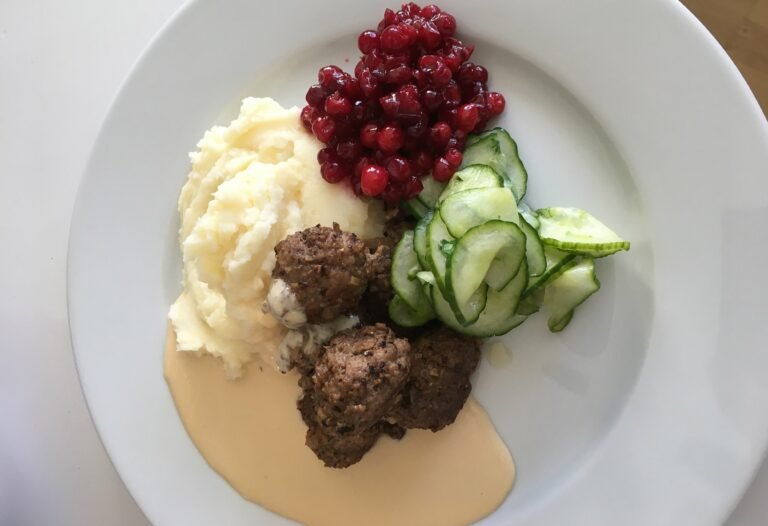

Köttbullar med mos

Recept
Köttbullar
- 600 g köttfärs, gärna en blandning av kalv- och högrev.
- 1/2 dl ströbröd.
- 2 dl vispgrädde.
- 1 st gul lök.
- 1 st ägg.
- 1 1/2 tsk salt.
- 2 krm nymalen svartpeppar.
- 2 krm nymalen muskot.
- smör till stekning.